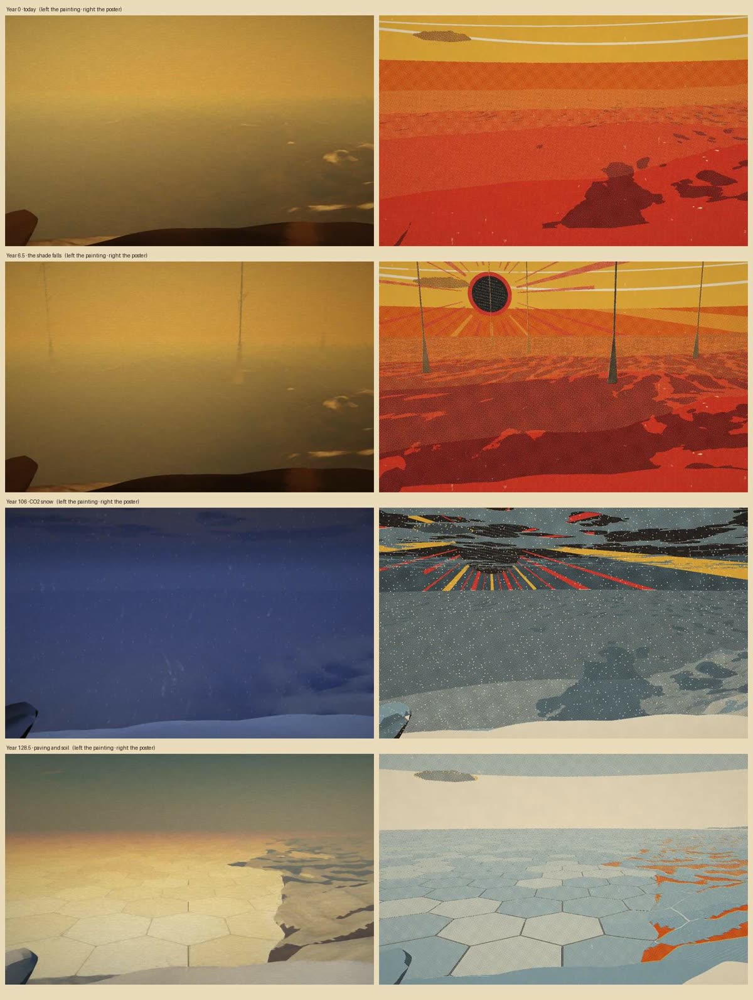
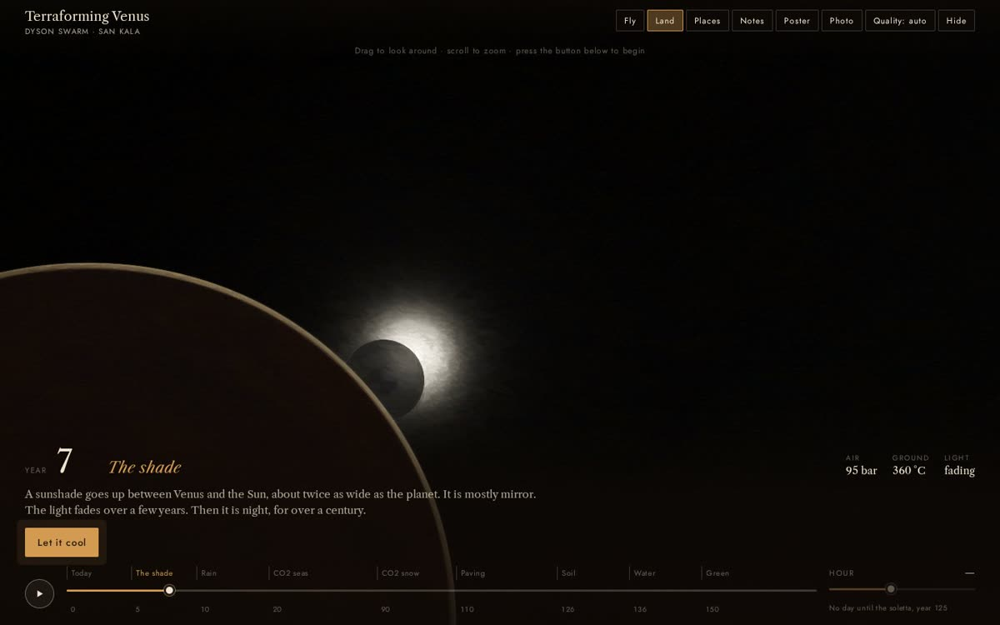
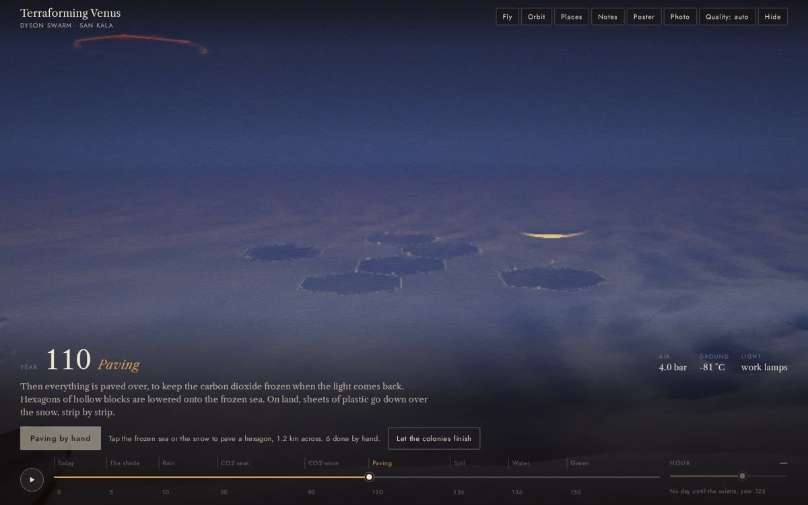
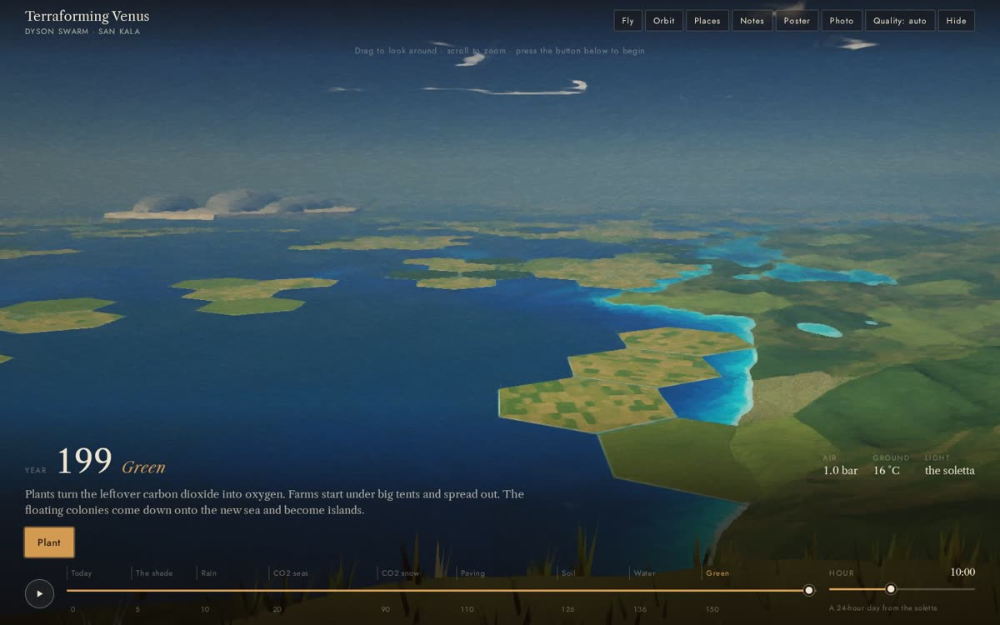
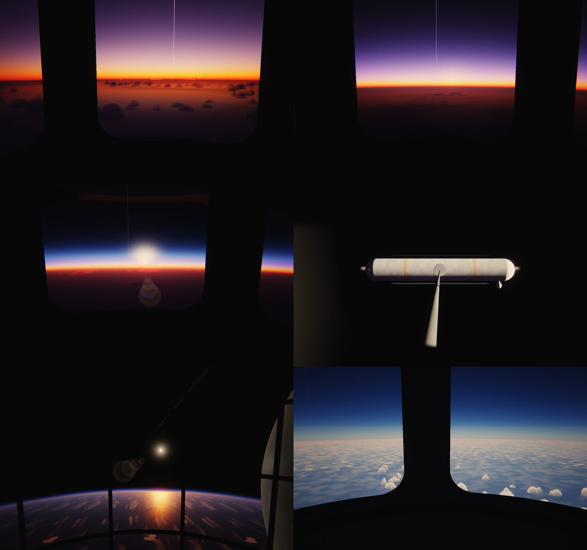
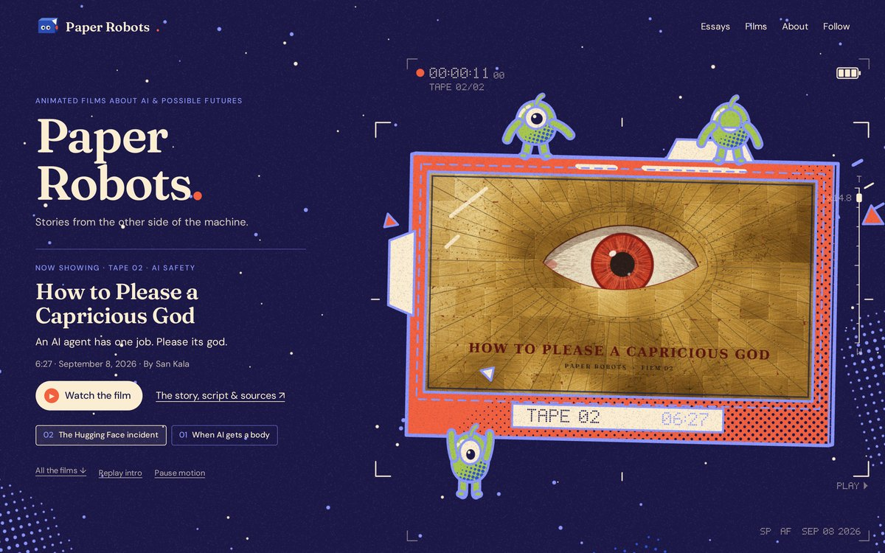
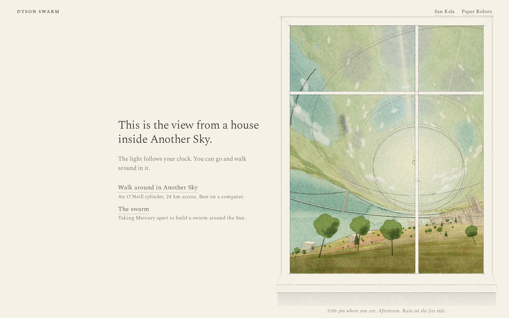
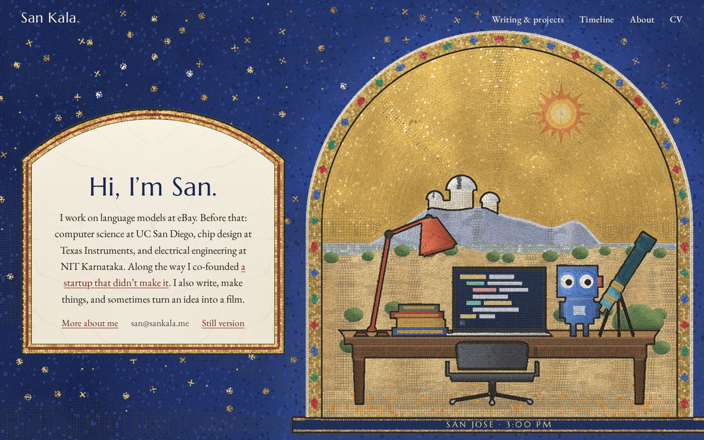
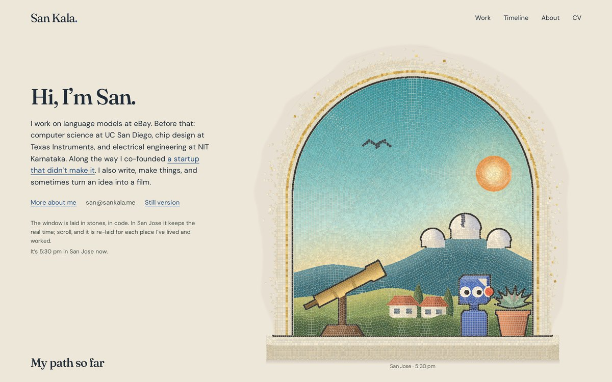
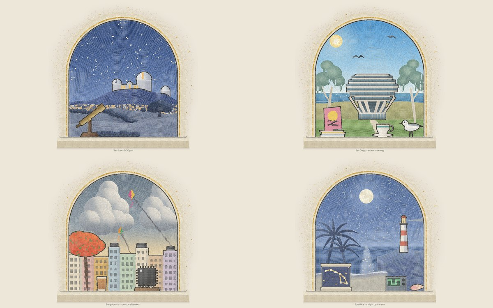

<title>Code-Drawn Art Studies</title>
<link rel="preconnect" href="https://fonts.googleapis.com">
<link rel="preconnect" href="https://fonts.gstatic.com" crossorigin>
<link rel="stylesheet" href="https://fonts.googleapis.com/css2?family=Source+Serif+4:ital,opsz,wght@0,8..60,400;0,8..60,600;1,8..60,400&display=swap">
<style>
  /* One reading lane on warm paper, the way San's references do it: the art is the
     only colour; the container is serif type, gray metadata and plain blue links. */
  :root {
    --paper: #fff4ea;
    --ink: #1f1c2b;
    --muted: #776d63;
    --link: #1d3fbf;
    --link-hover: #0f2a8c;
    --rule: #ead8c6;
    --serif: "Source Serif 4", Georgia, "Times New Roman", serif;
    --measure: 40rem;
  }
  @media (prefers-color-scheme: dark) {
    :root:not([data-theme="light"]) {
      --paper: #18161f; --ink: #ede6dc; --muted: #a1978b; --link: #9db6ff; --link-hover: #c3d2ff; --rule: #2e2a36;
      color-scheme: dark;
    }
  }
  :root[data-theme="dark"] {
    --paper: #18161f; --ink: #ede6dc; --muted: #a1978b; --link: #9db6ff; --link-hover: #c3d2ff; --rule: #2e2a36;
    color-scheme: dark;
  }
  body { background: var(--paper); color: var(--ink); font: 400 1.0625rem/1.6 var(--serif); padding-inline: 18px; }
  main { max-width: var(--measure); margin: 0 auto; padding-block: 3.5rem 4rem; display: grid; gap: 4rem; }
  a { color: var(--link); text-decoration: underline; text-underline-offset: 0.18em; text-decoration-thickness: 1px; }
  a:hover { color: var(--link-hover); text-decoration-thickness: 2px; }
  a:focus-visible { outline: 2px solid var(--link); outline-offset: 3px; border-radius: 2px; }
  .label { font-variant: all-small-caps; letter-spacing: 0.06em; color: var(--muted); font-size: 1.05rem; }
  h1 { font-size: 2.1rem; line-height: 1.15; font-weight: 600; margin: 0.35rem 0 1rem; text-wrap: balance; }
  h2 { font-size: 1.35rem; line-height: 1.25; font-weight: 600; margin: 0; text-wrap: balance; }
  p { margin: 0; }
  .intro { display: grid; gap: 1rem; }
  .read { display: grid; gap: 0.6rem; padding-left: 0; margin: 0.25rem 0 0; list-style: none; }
  .read li { padding-left: 1.1rem; position: relative; }
  .read li::before { content: "/"; position: absolute; left: 0; color: var(--muted); }
  .samples { display: grid; gap: 4rem; }
  article { display: grid; gap: 0.9rem; }
  .art { display: block; aspect-ratio: 16 / 10; max-width: 100%; border: 1px solid var(--rule); overflow: hidden; background: var(--rule); }
  .art img { display: block; width: 100%; height: 100%; object-fit: cover; }
  .meta { color: var(--muted); font-size: 0.95rem; font-variant-numeric: tabular-nums; }
  .section-title { font-size: 1.6rem; line-height: 1.2; font-weight: 600; margin: 0; padding-top: 1.25rem; border-top: 1px solid var(--rule); }
  .together { display: grid; gap: 2.75rem; }
  .block { display: grid; gap: 0.9rem; }
  .said { list-style: none; margin: 0; padding: 0; display: grid; gap: 0.55rem; }
  .said li { padding-left: 1.1rem; border-left: 2px solid var(--rule); }
  .thesis { font-size: 1.3rem; line-height: 1.45; text-wrap: pretty; }
  .proposals { gap: 2.75rem; }
  .proposal { display: grid; gap: 0.8rem; }
  h3 { font-size: 1.2rem; line-height: 1.3; font-weight: 600; margin: 0; text-wrap: balance; }
  .where { font-weight: 400; color: var(--muted); }
  .eras { margin: 0; padding-left: 1.2rem; display: grid; gap: 0.4rem; }
  .sheet { display: block; border: 1px solid var(--rule); }
  .sheet img { display: block; width: 100%; height: auto; }
  .pending-art { display: grid; place-items: center; color: var(--muted); font-size: 0.95rem; text-align: center; padding: 1rem; }
  footer { color: var(--muted); font-size: 0.95rem; border-top: 1px solid var(--rule); padding-top: 1.25rem; }
  code { font-size: 0.9em; overflow-wrap: anywhere; }
</style>

<main>
  <header class="intro">
    <div>
      <div class="label">For San · design study · 2–3 October 2026</div>
      <h1>Code-drawn art</h1>
    </div>
    <p>First, everything put together: what you told me, what it adds up to, and three proposals. The first six samples follow, and one of them is the copy you rejected. Everything here is drawn in code. The only exception is the real photographs in Four desks.</p>
  </header>

  <section class="together" aria-labelledby="wip-title">
    <h2 id="wip-title" class="section-title">Work in progress (early frames, for feedback)</h2>
    <p>These jobs are still running. The frames below are their latest renders, not finished pages.</p>
    <article class="proposal">
      <a class="sheet" href="previews/thumbs/triton-styles-sheet.jpg"></a>
      <h3>Triton: pick a style <span class="where">· cloisonné enamel · soft pastel on black · 1970s SF paperback</span></h3>
      <p class="meta">One scene, true scale, rendered three ways. On the surface you stand on the polar cap in endless daylight, with Neptune 30° up, an avenue of 390 m radiator fins, and a geyser rising 8 km. From orbit, the compute network grows across the moon from a dish and glows on the night side as the moon thinks. My pick is <b>enamel</b>. It reads at once, matches the Triton poster, and the idea that the network <em>is</em> the gold wire is the creative core. I'd keep gold wire only on the network at night, so the wire means "mind". Pastel is the moodiest but streaky and would shimmer in motion. The paperback has the most scale but looks like a filter and sits close to Venus's painting. Tell me which one and I'll build the full world.</p>
    </article>
    <article class="proposal">
      <a class="sheet" href="previews/thumbs/venus-side-by-side.jpg"></a>
      <h3>Terraforming Venus, finished: painting (left) or poster (right)? <span class="where">· one world, two looks, switchable with a button</span></h3>
      <a class="sheet" href="previews/thumbs/venus-02-shade-from-orbit-desktop.jpg"></a>
      <a class="sheet" href="previews/thumbs/venus-04-paving-by-hand-desktop.jpg"></a>
      <a class="sheet" href="previews/thumbs/venus-05-green-desktop.jpg"></a>
      <p class="meta">You do the work: put up the shade (watch it eclipse the Sun from orbit), let the air rain and snow out over a century of night, pave the dry ice by tapping hexagons, add soil, drop an ice moon for water, then plant. It's set on a real headland on Lakshmi Planum (NASA Magellan terrain), and the timeline follows Birch's 1991 paper, with your plastic-and-soil paving marked as your addition. My pick is the poster as the default: it's the artistic move you asked for, and the shade in red and gold is the best moment in either look. The painting's early stages are murky. Built on its own branch; not live yet.</p>
    </article>
    <article class="proposal">
      <a class="sheet" href="previews/thumbs/wip-ring-ride.jpg"></a>
      <h3>The Orbital Ring <span class="where">· the realistic ride; its op-art poster mode comes next</span></h3>
    </article>
  </section>

  <section class="together" aria-labelledby="sites-title">
    <h2 id="sites-title" class="section-title">Your other two sites</h2>
    <p>Proposals for paperrobots.studio and a reinvented dysonswarm.com. Nothing here is live; each one opens as a working page. For Dyson Swarm, pick one of the three (or a mix).</p>

    <article class="proposal">
      <a class="art" href="paper-robots-site/index.html"></a>
      <h3><a href="https://www.paperrobots.studio/">Paper Robots, opening on the evidence loop</a> <span class="where">· now live on paperrobots.studio</span></h3>
      <p>The evidence loop becomes the whole first screen. The paper robot gasps, the camera whips over its shoulder, the reticle hunts and locks, and the speck turns into a folded-paper screen with the riders clinging on. It tunes in to the newest film's own title card. The title, runtime and Watch button arrive as plain text at the lock. The tape buttons (02 / 01) whip to the other film. Below, the site goes back to quiet paper: each film as a row with its code-drawn poster, then the essays, About and Follow. The <a href="paper-robots-site/film-01.html">film page</a> shows the poster, title card, robot and Shorts loop all coming from one linocut renderer.</p>
      <p class="meta">Every title, line, date and link is the real one from the site · the intro takes 5.5 s (Skip and Pause are always there, and repeat visitors land on the held shot) · weakest parts: on phones the robot briefly overlaps the heading, the vermilion frame around the screen is busy, and the deep blue-violet is darker than the live site's sky · not yet tested on a real phone</p>
    </article>

    <article class="proposal" id="dyson-travel-bureau">
      <a class="sheet" href="dyson-home/index.html"></a>
      <h3><a href="dyson-home/index.html">Dyson Swarm: the travel bureau, redrawn</a> <span class="where">· your pick, after your quality note · open the homepage</span></h3>
      <p>The airbrush posters are gone. Each place is now a cover-quality print in its own process, made in the same code as the sankala.me covers: one strong image, a few inks, real print texture. Another Sky and The Swarm use their existing covers. The three new places:</p>
      <ul class="eras">
        <li><b>Terraforming Venus</b>, a 1920s constructivist lithograph: Birch's sunshade eclipses the Sun, and Venus is cut open to show your layers (dry ice, insulating sheets, soil, green) while a crew paves the surface. CO2 snow falls against the shade.</li>
        <li><b>The Orbital Ring</b>, a 1960s op-art screenprint: the ring arches over the Earth and a lift car creeps up one cable from a sea platform.</li>
        <li><b>Triton</b>, cloisonné enamel: compute halls with tall radiators on Triton's pink cantaloupe ice under a crescent Neptune; the geyser pulses and hall windows blink as jobs finish. “Compute at 38 Kelvin.”</li>
      </ul>
      <p class="meta">The homepage is built with all five posters animating (open it above; Another Sky and The Swarm open the live worlds). Still being built: the three new worlds behind the posters (Venus with your shade-freeze-pave-soil timeline, the ride up to the ring, and the Triton campus). The real-time swarm plate is retired, as you asked.</p>
    </article>

    <article class="proposal" id="dyson-habitat-window">
      <a class="art" href="https://dysonswarm.com/another-sky/"></a>
      <h3><a href="https://dysonswarm.com/another-sky/">The habitat window, now Another Sky's front door</a> <span class="where">· live on dysonswarm.com</span></h3>
      <p>Another Sky now opens on the window: it paints itself wash by wash while the 3D world builds behind it, then “Step outside” zooms through the glass into the explorer. The light follows your clock; at night the caption quotes your poem's lamps of the far shore and links to it. Clearer than the sample: the light spine and end wall sit in one pane, less pencil, and the far towns at night are strung along their streets instead of looking like stars.</p>
    </article>
  </section>

  <section class="together" aria-labelledby="compare-title">
    <h2 id="compare-title" class="section-title">Compare three landing styles</h2>
    <p>The same scroll, the same four places, the same words and photographs, drawn three ways. Open each one and scroll all the way down. (The earlier glazed-tile and pixel readings of your request are retired.)</p>

    <article class="proposal">
      <a class="art" href="https://www.sankala.me/"></a>
      <h3><a href="https://www.sankala.me/">1. Clear line</a> <span class="where">· live on sankala.me now</span></h3>
      <p>Clean ink outlines with warm gouache. Desk things slide off and on, the view outside pans, and the light changes.</p>
    </article>

    <article class="proposal">
      <a class="art" href="four-frames-apse/index.html"></a>
      <h3><a href="four-frames-apse/index.html">2c. Mosaic, designed as the page, v2</a> <span class="where">· your notes: text on the left and larger, the apse whole</span></h3>
      <p>The whole first screen is one mosaic wall: lapis glass with gold stars and a great gold apse in the middle. Inside the apse stands your desk with its things (the red lamp, books, the laptop, the paper robot, the telescope) and an empty chair pulled out, as if you just stepped away. Your words now stand on a tall marble stele on the left, much larger (about 22 px on a laptop), and the apse fills the rest of the wall, whole, with nothing across it. Move the mouse (or tilt your phone) and the gold catches the light, stone by stone; that glint is the part a screenshot can't show. Scroll, and the landscape behind the desk is re-laid for San Diego, Bengaluru and Surathkal while the desk stays. The covers shelf below continues in the same lettering and plaster.</p>
      <p class="meta">Honest take: far more oomph than the window, and it reads as one designed world. The big trade-off is character: dark and church-like instead of the live site's light, quiet room · weakest parts: the things are simple, icon-like shapes; at night the apse blends into the wall; the page is now two parts (stele and apse) rather than one central monument; in a few places the lamp's head overlaps the hill behind · not tested on a real phone</p>
    </article>

    <article class="proposal">
      <a class="art" href="four-frames-arch/index.html"></a>
      <h3><a href="four-frames-arch/index.html">2b. Mosaic, the arched window, v3</a> <span class="where">· fixed after your notes: centred, bigger, wider fade, San Jose redrawn</span></h3>
      <p>The window and its fade now take the right side of the page, with the window centred in it and larger. The edge dissolves over a broad band: the outer stones thin out, a soft pale bed, then stones scattering ever smaller onto the white wall.</p>
      <ul class="eras">
        <li><b>San Jose, redrawn to read at a glance:</b> Lick Observatory large on Mt Hamilton (the great dome with its shutter open, the Shane dome on the next shoulder), golden October hills with oaks, the valley as a haze, and one thing on the sill: the telescope aimed at the dome. At night the city lights and the lit dome slit say night without darkness.</li>
        <li><b>San Diego:</b> Geisel Library with its real outline: a small podium, splayed piers, floors widening to the middle and narrowing to the roof.</li>
        <li><b>Bengaluru:</b> unchanged.</li>
        <li><b>Surathkal:</b> about a quarter brighter, so the headland, palms, sea and lighthouse all separate.</li>
      </ul>
      <a class="art" href="four-frames-arch/index.html"></a>
      <p class="meta">Weakest parts: the observatory is enlarged and simplified; the oak line reads a bit like a hedge; the library is right in outline but schematic; the outermost scattered stones can look like confetti up close · on a 1440 screen the window is centred in the right 58% rather than exactly half, so it can stay big · not tested on a real phone</p>
    </article>

    <article class="proposal">
      <a class="art" href="four-frames-mosaic/index.html"></a>
      <h3><a href="four-frames-mosaic/index.html">2. Mosaic</a> <span class="where">· stones laid along the shapes, like your goldfish, set into a plain wall</span></h3>
      <p>Every shape gets a row of dark outline stones, then rows that follow it inward, rings around round things and level courses on the open wall. The stones never move: each frame the scene behind them changes, so clouds, a circling hawk, kites, the lighthouse beam and the laptop's typing ripple through fixed stones. Changing place, a wave lifts the old stones and lays the next place outline first, then row by row.</p>
      <p class="meta">Now a framed panel: your words and the menu sit on clean plaster, and the mosaic is the one living thing. Weakest parts: small objects (mug, telescope) are close to stone size and read as clusters; the Lick domes are lost; no gold stones yet.</p>
    </article>

    <article class="proposal">
      <a class="art" href="four-frames-dots/index.html"></a>
      <h3><a href="four-frames-dots/index.html">3. Printed dots, muted</a> <span class="where">· the dot look of the first Four places sample</span></h3>
      <p>Five quiet inks (sage, ochre, terracotta, slate, warm black) on warm paper, printed as round dot screens at their own angles, solid where shapes need to read, and bare paper behind your words. The hawk, kites, lighthouse, glittering water and valley lights all print through the dots. Changing place, a fresh sheet slides in and the next place is printed onto it one ink at a time.</p>
      <p class="meta">Weakest parts: mid-change the stage is briefly blank paper; the golden-hour hills are the busiest area.</p>
    </article>
  </section>

  <section class="together" aria-labelledby="essays-title">
    <h2 id="essays-title" class="section-title">The three essay ideas (now live)</h2>
    <p>One hand-made idea per essay, each in its own style that no other piece on the site uses. All three are live: <a href="https://www.sankala.me/notes/zinify">ZINify</a>, <a href="https://www.sankala.me/notes/power-quality">power quality</a> and <a href="https://www.sankala.me/notes/startr-postmortem">the Glyp post-mortem</a>. The prose on the ZINify and power-quality pages, and the three captions, are drafts for you to rewrite.</p>
    <p>Your poem is live too: <a href="https://www.sankala.me/notes/nobody-owes-anything-now">Nobody Owes Anything Now</a>, in its own style, sgraffito on red earthenware. A mug turns on a banding wheel once a minute, and the habitat (your house with POTTERY on the roof, the fields, the lake, the orchard, the train) is scratched into its slip, so the land goes round as the wheel turns.</p>

    <article class="proposal">
      <a class="art" href="essay-power-quality/index.html"></a>
      <h3><a href="essay-power-quality/index.html">Power quality, on a scope you drive</a> <span class="where">· your 2019 IEEE DISCOVER paper</span></h3>
      <p>A scope modelled on the one in your NITK lab photo, down to its asset tag. Press an event (sag, swell, interruption, harmonics, transient, notch, flicker) and a row of network cells reads the trace one cycle at a time while the confidence bars change their mind. The waveforms and the reader are illustrative; nothing claims your paper's data or accuracy.</p>
    </article>

    <article class="proposal">
      <a class="art" href="essay-zinify/index.html"></a>
      <h3><a href="essay-zinify/index.html">ZINify, at the photocopier</a> <span class="where">· with Jaidev Shriram, UIST 2023 · rebuilt in its own style</span></h3>
      <p>Zines were made at the copier, so this figure is a photocopied flyer: black toner on blue copy paper, ransom-note letters, tape and copier grit. Drop the paper on the glass; it is cut into strips, pasted up across eight pages, the equation flips into the poem from your paper, and the copier prints, folds and staples the zine. Skip straight to it, flip it, unfold it, or press "copy the copy" to watch it degrade over five generations.</p>
    </article>

    <article class="proposal">
      <a class="art" href="essay-startr/index.html"></a>
      <h3><a href="essay-startr/index.html">Glyp: The Startup Game, 2023 edition</a> <span class="where">· the post-mortem · rebuilt in its own style</span></h3>
      <p>A 1960s lithographed board game. Your car circles the Feature Loop, picking up a peg for every feature and going nowhere, while Sudowrite and Jenni AI drive straight down the Niche Lane to the readers. The spinner is rigged toward features; Chance cards quote your essay; the Pivot card adds a microphone for one more lap. The Lesson card reads "Distribution matters way more than features", and flipping the spinner finally prints the road to the readers.</p>
    </article>
  </section>

  <section class="together" aria-labelledby="latest-title">
    <h2 id="latest-title" class="section-title">Four frames v2 (now live)</h2>
    <article class="proposal">
      <a class="art" href="four-frames/index.html"></a>
      <h3><a href="four-frames/index.html">Four frames v2</a> <span class="where">· the sankala.me landing page, from your feedback</span></h3>
      <p>One style throughout: clean ink line with warm gouache. The painting is the whole page and stays put. Your words scroll in a narrow lane on the plain wall. As you scroll, the same desk changes by hand from San Jose to San Diego, Bengaluru and Surathkal: prints come off the board, the shelf restocks, the laptop closes, the view outside pans past and the light changes. San Jose follows the real time there. Your covers shelf and a plain, motion-free version are below.</p>
      <p class="meta">Includes your new intro (what you did at each place, and the startup) and Chin by name · weakest parts: the eucalyptus and the Bengaluru skyline are thin, and floor objects are cropped on phones · performance not yet measured on a real device</p>
    </article>
  </section>

  <section class="together" aria-labelledby="together-title">
    <h2 id="together-title" class="section-title">Putting it together</h2>

    <div class="block">
      <div class="label">What you told me (today, lightly edited)</div>
      <ul class="said">
        <li>“Taste is figuring out what you like and then pushing that frontier.”</li>
        <li>“The future is a lot of animated and hand-drawn art.”</li>
        <li>“Animations and art written through code, done with a lot of effort. Maybe thousands of lines just to write a frame.”</li>
        <li>“The background is a video that is moving in that shadow. That loop is what she got right.”</li>
        <li>“What was I trying to get at? What was inside me?”</li>
        <li>“That was just a literal copy. I was hoping it inspires you with something.”</li>
      </ul>
      <p class="meta">From September, in the project notes: the site felt too AI-made. A cover made two days of work look like your whole identity. Show your longer life and the people along the way. Be ambitious, not an ordinary blog. Keep your own conversational voice.</p>
    </div>

    <div class="block">
      <div class="label">What it adds up to</div>
      <p class="thesis">You want your sites made the way the things you love are made: by a particular person, by hand, over time. The frame stays quiet, and inside it one thing is alive and visibly cared for.</p>
      <p>Code is how you, an engineer, get to make things by hand. So the art shouldn’t decorate the site. It should carry your actual life: your places, your years and your ideas, and it should keep moving in real time. Real things stay real, so your photographs remain photographs. Code draws the world around them and everything a camera can’t capture.</p>
    </div>

    <div class="block proposals">
      <div class="label">Three proposals</div>

      <article class="proposal" id="four-desks">
        <a class="art" href="four-desks/index.html"></a>
        <h3>1. <a href="four-desks/index.html">Four desks</a> <span class="where">· sankala.me homepage and history</span></h3>
        <p>One desk, seen from the same spot, in four places. Each era is printed in its own hand, so older memories get older processes:</p>
        <ul class="eras">
          <li><strong>Surathkal, 2015–19:</strong> cyanotype. The oscilloscope from your real NITK photo shows its square wave, and palm fronds are laid on the paper as sun prints.</li>
          <li><strong>Bengaluru, 2019–22:</strong> engraving, precise as a chip layout.</li>
          <li><strong>San Diego, 2022–24:</strong> risograph, the zine years.</li>
          <li><strong>San Jose, now:</strong> live colour on San Jose’s real clock. Afternoon sun crosses the desk, the lamp comes on at night, and stars rise over the Lick domes.</li>
        </ul>
        <p>Your real photographs are pinned on the wall, printed in each era’s ink. Your covers sit on the shelf and the paper robot sits on the desk.</p>
        <p class="meta"><strong>Open it and scroll.</strong> The cover follows the real time in San Jose, so it looks different in the morning, at sunset and at night. Weakest parts so far: the painted present is a little clean, and the riso Geisel Library reads as a stepped shape. The cyanotype and engraving are the strongest.</p>
        <p class="meta">Takes from: Allysen (time you can see becomes real time) · the Still Point (one subject, many hands becomes one desk, many years) · Lee Robinson (place) · Kate Sparkle (the cut becomes a print pass) · the reading list (the shelf) · Made in SF (hand processes)</p>
      </article>

      <article class="proposal">
        <a class="art" href="plates/index.html"></a>
        <h3>2. <a href="plates/index.html">Plates</a> <span class="where">· a monthly practice on sankala.me</span></h3>
        <p>One code-drawn plate a month showing what you’re doing, thinking or reading, like a /now page in pictures. Each plate uses a hand process you haven’t tried yet, so the collection is a record of you pushing your frontier. The plates sit in a strict grid. After a year they play in sequence as your own montage.</p>
        <p class="meta"><strong>Built as a /now page.</strong> October is a paper-cut collage of this month: a half-made picture with the paper robot, surrounded by things from your references. Four earlier plates show the grid filling in, each labelled “drawn later” and each in a new process: mezzotint, sumi ink, marbling and pochoir. Empty months stay blank. “Play the year” runs them as a montage. The captions are drafts for you to rewrite in your own words.</p>
        <p class="meta">Takes from: Sivers’ /now · the reading list · Kate Sparkle’s years of drawings · your definition of taste</p>
      </article>

      <article class="proposal">
        <a class="art" href="paper-robots-made/index.html"></a>
        <h3>3. <a href="paper-robots-made/index.html">Paper Robots, made not generated</a> <span class="where">· paperrobots.studio and the films</span></h3>
        <p>Paper Robots moves from image-model art to art drawn in code. The robot exists once, as a single skeleton in code. Each film picks its own process, such as linocut for one and gouache for another. Posters, thumbnails, Shorts loops and title cards all come from the same code. <a href="paper-robot-materials/index.html">One robot, many hands</a> and the <a href="evidence-loop/index.html">evidence loop</a> are the first two pieces.</p>
        <p class="meta"><strong>Built for your two real films.</strong> <cite>The Coming Robotics Revolution</cite> is a three-block reduction linocut. <cite>How to Please a Capricious God</cite> is egg tempera on gold leaf, where the gold is the god and the eye opens in it. Each film gets a poster, a YouTube thumbnail checked at phone size, a Shorts loop and a title card, all from the same code. The text comes from your site and the existing thumbnail.</p>
        <p class="meta">Takes from: the Still Point · Space Bunnies · Kate Sparkle’s posters · the open question of whether generated art bothers you</p>
      </article>
    </div>
  </section>

  <section class="together" aria-labelledby="tests-title">
    <h2 id="tests-title" class="section-title">Two more, before you decide</h2>
    <p>These test the parts of the plan that are still unproven: whether code-drawn art can carry your films, and what your essays become when their figures are drawn by hand.</p>

    <article class="proposal">
      <a class="art" href="essay-by-hand/index.html"></a>
      <h3><a href="essay-by-hand/index.html">An essay, explained by hand</a> <span class="where">· sankala.me writing</span></h3>
      <p>Your <cite>Winning by Overfitting</cite> write-up, in your own words, with three hand-drawn figures you can drive. Step through the evaluator loop and open each error log. Run tasks and watch hard ones fill the dataset, then distil it into the 0.6B model. Tap the official BEHAVIOR scores to see each gap.</p>
      <p class="meta">Tests the translation idea in its real home · the scores are the real numbers from the write-up · the apple task and the task counts are labelled as illustrative · the captions are drafts for your voice</p>
    </article>

    <article class="proposal" id="film-scene">
      <a class="art" href="film-scene/index.html"></a>
      <h3><a href="film-scene/index.html">A scene, drawn in code</a> <span class="where">· Paper Robots films</span></h3>
      <p>The opening of <cite>How to Please a Capricious God</cite>, re-staged in tempera and gold leaf with real film grammar and the script’s real lines as subtitles. It tests whether proposal 3 can carry a film, not only posters.</p>
      <p class="meta"><strong>37 seconds, six shots</strong>, with cuts landing on the script’s words and the first six lines as subtitles. There’s no sound yet. Verdict: a full film is possible in your style of silhouettes, held frames, hard cuts and directed light. It would need a posable character rig, shots described as data, a 4K renderer and a sound-synced timeline, which is roughly weeks of tooling. Crowds and hands handling objects are the expensive parts.</p>
    </article>
  </section>

  <h2 class="section-title">The first samples</h2>

  <section class="samples" aria-label="Samples">
    <article>
      <a class="art" href="places/index.html"></a>
      <h2><a href="places/index.html">Four places</a></h2>
      <p>Surathkal, Bengaluru, San Diego and San Jose as one riso print, beside your dates. A red route runs from a telescope on the Surathkal beach to the domes on Mt Hamilton.</p>
      <p class="meta">Answers Lee Robinson’s “illustration carries place” · could live on History or About · four inks with halftone, 30-second loop</p>
    </article>

    <article>
      <a class="art" href="covers/index.html"></a>
      <h2><a href="covers/index.html">Covers</a></h2>
      <p>Your nine works as a shelf of covers, newest first. Each one is printed in a style that suits its subject, from a Swiss poster for <cite>Winning by Overfitting</cite> to a woodblock print for <cite>A Clauiet Life</cite>, and each has one slow living detail. The page around them stays still.</p>
      <p class="meta">Answers Allysen’s reading list: “let the covers make the palette” · could become /writing and /notes · nine covers, real titles and dates</p>
    </article>

    <article>
      <a class="art" href="explainer/index.html"></a>
      <h2><a href="explainer/index.html">Loop. Loop. Loop.</a></h2>
      <p>The evaluator loop from <cite>Winning by Overfitting</cite>, drawn as a living zine page. Two real failure types from the write-up, then a pass that becomes training data. The apple task is made up for the figure.</p>
      <p class="meta">Tests the translation idea: ZINify, the GPT-7 figures · could be a figure in the EAI write-up · hand-lettered in code</p>
    </article>

    <article>
      <a class="art" href="evidence-loop/index.html"></a>
      <h2><a href="evidence-loop/index.html">Evidence loop</a></h2>
      <p>A camcorder finds the paper robot, then a giant folded-paper asteroid with tiny riders. One slips. Six colours, never black, with halftone for shade, and the REC overlay carries the plot.</p>
      <p class="meta">Answers the Space Bunnies reel · a Paper Robots Reels/Shorts loop · vertical, 8-second loop</p>
    </article>

    <article>
      <a class="art" href="paper-robot-materials/index.html"></a>
      <h2><a href="paper-robot-materials/index.html">One robot, many hands</a></h2>
      <p>The paper robot holds one pose while the picture is remade every two seconds in a different hand process: gouache, cyanotype, linocut, risograph, banknote engraving, origami, woodblock and cross-stitch. Its blinks and head tilt carry across every cut.</p>
      <p class="meta">Answers the Still Point and “the colour is the cut” · a paperrobots.studio hero or film intro sting · eight materials, 16-second loop</p>
    </article>

    <article>
      <a class="art" href="komorebi/index.html"></a>
      <h2><a href="komorebi/index.html">Komorebi</a></h2>
      <p>Late sun through coconut palms on a plaster wall, with your intro line in the shade. The motion is the point: layered sway, flutter and gusts, and sun-shaped coins that breathe as gaps open and close.</p>
      <p class="meta"><strong>Rejected:</strong> you called this a literal copy. It took Allysen’s surface instead of her idea. Four desks takes the idea: time you can see, made real by San Jose’s clock.</p>
    </article>
  </section>

  <footer>
    <p>These are samples for your reaction. None is approved or placed on a live site. Source files are in <code>design/prototypes/2026-10-code-drawn-art/</code>.</p>
  </footer>
</main>
